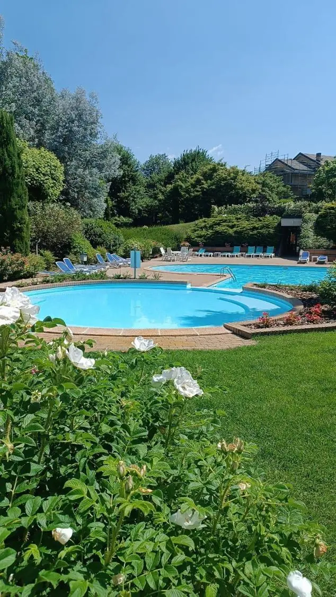

Der Pool
Ein Pool auf zwei Ebenen inmitten von Grün: ein rundes Becken mit flachem Wasser, ideal für Kinder, und ein größeres Hauptbecken zum Schwimmen, über eine Treppe erreichbar. Liegen, Sonnenschirme, Tischchen, warme Duschen innen und eine Außendusche, getrennte Toiletten und Umkleiden.